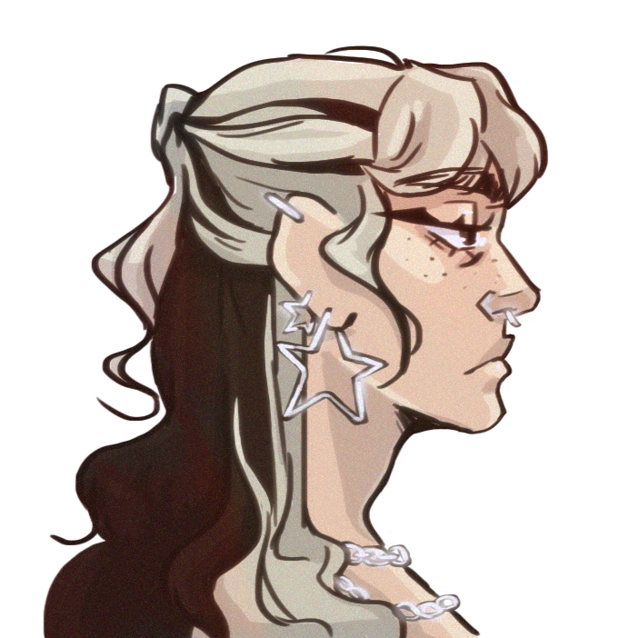

Joven diseñadora gráfica apasionada con el dibujo desde la infancia. Realizo proyectos de diseño publicitario, de identidad corporativa, creación para rrss, edición de vídeo... Actualmente estoy interesada en el mundo del 3d, el diseño web y el diseño experimental.


ESCUELA SUPERIOR DE ARTE Y DISEÑO DE ALICANTE
→ Estudios Superiores en Diseño Gráfico | Septiembre 2020 - Junio 2024
IES Carrús Elche
→ Bachillerato Artístico | Septiembre 2018 - Julio 2020
Centro Trinity | Eiffel Idiomas
→ Estudios en inglés | Septiembre 2010 - Febrero 2020
SKILLS
Atención al detalle
Creatividad
Capacidad de análisis
Organización
IDIOMAS
Inglés → Nivel B2
Valenciano → Nivel Intermedio
GRUPO GOLIAT, S.L. | FEB 2024 - JUN 2024
→ Diseñadora Gráfica
Prácticas curriculares donde realicé diseño gráfico aplicado a redes sociales, packaging, web y corporativa y trato con proveedores y clientes.
FREELANCE | 2018 - ACTUALIDAD
→ Diseño e ilustración
Actualmente realizo encargos de diseño e ilustración a clientes que me contactan a través de mis redes sociales.
TINDAYA SOCIAL, S.L. | AGO 2022 - SEP 2022
→ Monitora socioeducativa
Estuve como monitora a la vez que impartí clases de dibujo a alumnos entre 5 y 12 años.